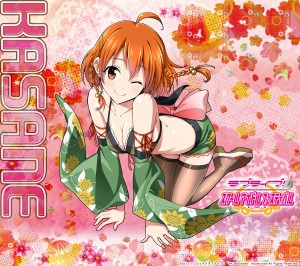
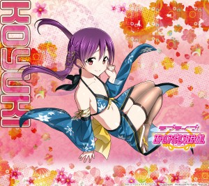
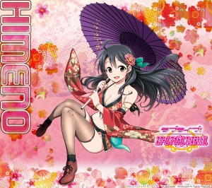

所谓“红花还要绿叶配”，LoveLive!的人气离不开μ’s九位小姐姐的魅力，但也离不开企划中的各个绿叶配角的配合像是妹妹和A-RISE，而在LoveLive!手游中也有着大量的的N卡路人妹子角色，今天LoveLive!手游公布了第二次N卡总选举的结果绫小路姫乃、支仓かさね、白濑小雪这三位路人妹子成为了前三名，官方推出了三人的特殊纪念壁纸，这性感度丝毫不输μ’s的九位小姐姐。
支仓かさね

白濑小雪

绫小路姫乃
这三位妹子在手游中就是作为一般的N卡角色登场，对于比较关注SR和UR的玩家来说这些转学生角色平时并不会被特别关注，而第二次N卡总选举的三位妹子的特制壁纸绝对是性感除了新的高度，完全不输于小姐姐们的SR和UR，官方在网站公布了几套尺寸的壁纸供玩家下载，也算是小小的福利了，既然N卡随抽可见官方不如让这三张特制壁纸也成为N卡卡片让非洲教徒也自嗨一把。